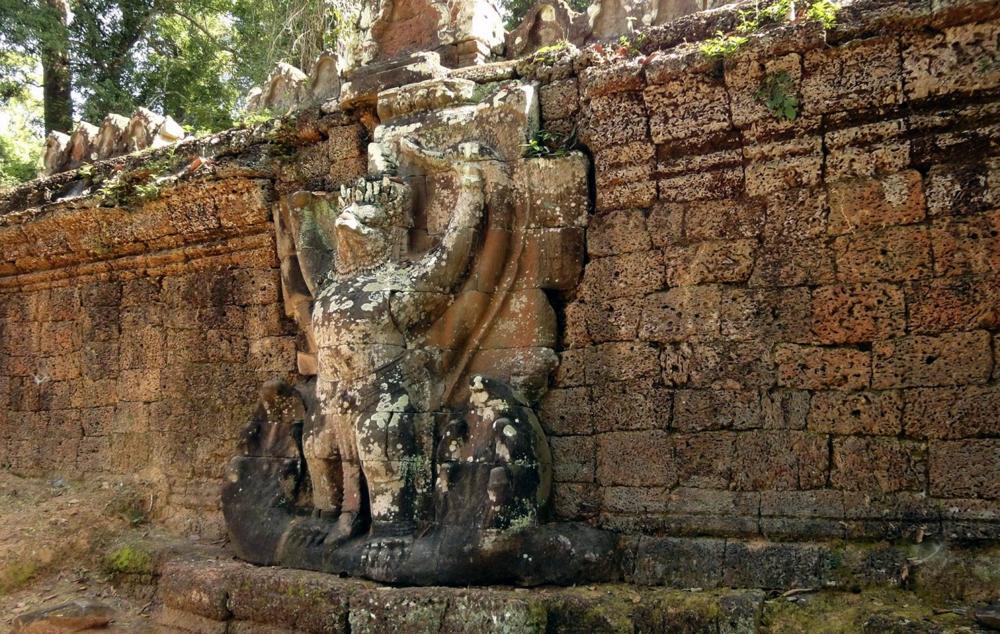
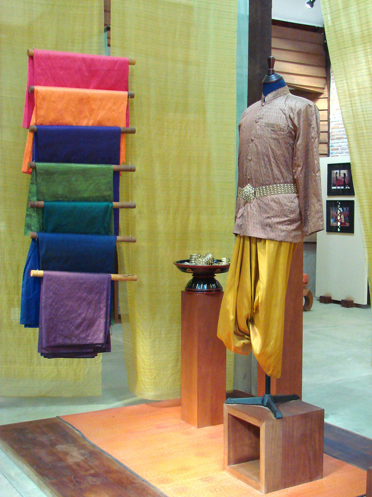
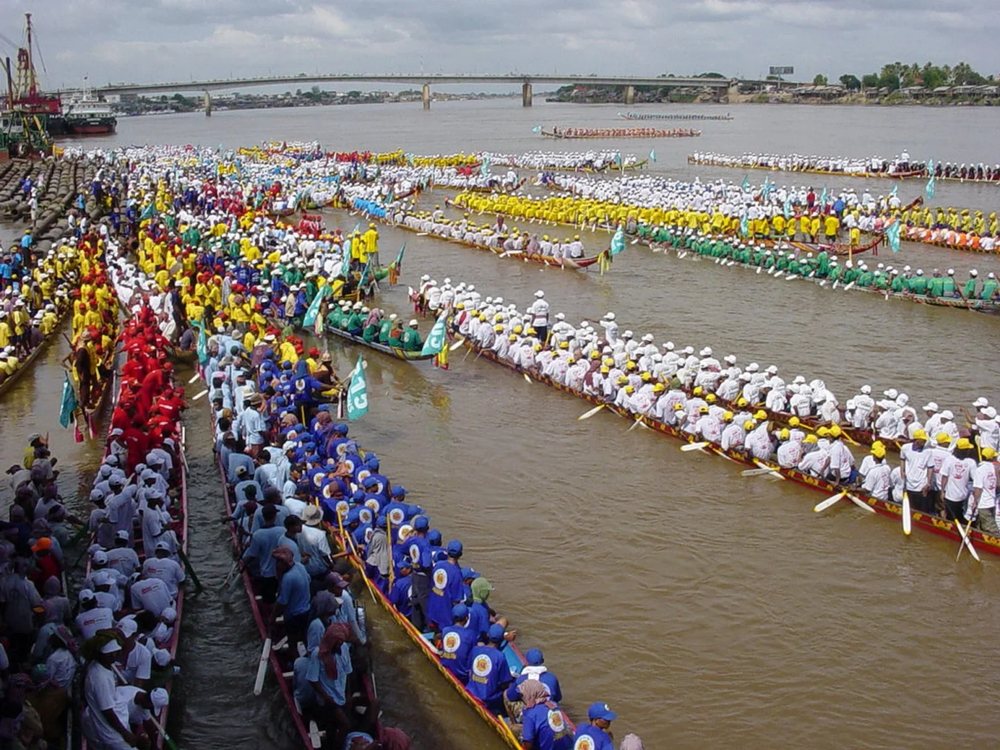
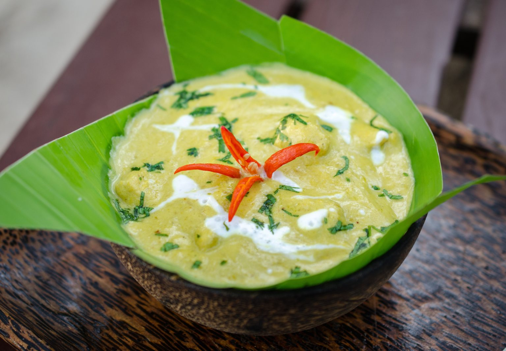
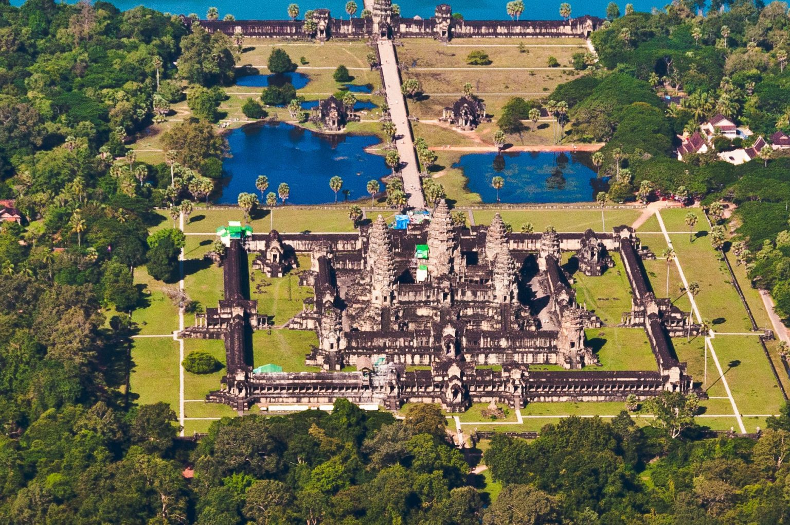

Cambodia, a land steeped in history and rich with tradition, beckons travelers with its captivating culture. From the awe-inspiring Angkor Wat to the graceful Apsara dancers, every corner pulsates with unique experiences. This guide unlocks the secrets of Cambodian culture, offering insights into its fascinating past, vibrant present, and must-see cultural treasures.
Key Insights
Cambodia boasts a rich and fascinating culture, deeply rooted in traditions spanning millennia. Here are some key aspects to explore:
1.Religion:Theravada Buddhism is the dominant faith, shaping Cambodian beliefs, customs, and daily life. Temples like Angkor Wat stand as testaments to their devotion.
2.Food Culture: Cambodia's culinary scene is a culinary paradise, with a diverse array of flavors, spices, and spices, each a testament to the country's culinary heritage.
3.Art and Architecture: Cambodia's architectural marvels, including the iconic Angkor Wat temple complex, are a testament to the country's vibrant culture.
4.Music: Cambodia's music scene is a melting pot of cultures, with a diverse range of genres, styles, and instruments, each a testament to the country's musical heritage.
5.Art and Architecture: Cambodia's architectural marvels, including the iconic Angkor Wat temple complex, are a testament to the country's vibrant culture.
6.Challenges: Cambodia faces challenges like poverty, landmines, and social issues. Recognizing these struggles enriches your understanding of the resilience and adaptability of the Cambodian people.
Introduction to Cambodian Culture
A stone carving of a garuda, a symbol of luxury and elegance in Cambodian culture, on the wall of Preah Khan Temple.
Embark on a cultural odyssey with our in-depth exploration of
Cambodian Culture. Immerse yourself in the
timeless traditions of the Khmer Empire, savor the exquisite flavors of Khmer cuisine, and witness the
mesmerizing Apsara dance. From the architectural wonders of Angkor Wat to the spiritual embrace of Theravada
Buddhism, our guide unravels the essence of Cambodian heritage.br
Navigate social customs, delve into contemporary trends, and witness the global influence of Cambodia’s
cultural exports. Join us on this enriching journey, where every heading unveils a chapter of Cambodia’s
vibrant tapestry. Experience the past, present, and future of Cambodian Culture in a comprehensive guide
that goes beyond the surface, providing insights and a genuine understanding of this captivating Southeast
Asian gem.
Cambodian culture is a unique blend of indigenous animism and the Indian religions of Buddhism and Hinduism. Cambodians have developed a distinctive Khmer identity and civilization over nearly two millennia, which is reflected in their language, arts, architecture, cuisine, and customs. Cambodian culture is also influenced by its history of colonialism, war, and resilience, as well as its natural and diverse landscapes. Cambodian culture is rich in traditions, festivals, and celebrations, as well as in creativity, innovation, and learning.
Khmer Traditional Clothing
The sampot chang kben is a long piece of cloth that is wrapped around the waist and twisted into a knot between the legs.
Khmer traditional clothing is the style of dress worn by the Khmer people of Cambodia, influenced by their history, culture, and religion. Khmer traditional clothing consists of various types of garments, such as the sampot, the krama, the sampot chang kben, and the sampot tep apsara, which are made from materials such as cotton, silk, and gold. Khmer traditional clothing reflects the social class, gender, and occasion of the wearer, as well as the beauty and elegance of Khmer art and architecture. Khmer traditional clothing is still worn today, especially in rural areas and during festivals and ceremonies.
Cambodian traditional dress
Cambodian traditional dress is the style of clothing worn by the Khmer people of Cambodia, influenced by their history, culture, and religion. Cambodian traditional dress consists of various types of garments, such as the sampot, the krama, the sampot chang kben, and the sampot tep apsara, which are made from materials such as cotton, silk, and gold. Cambodian traditional dress reflects the social class, gender, and occasion of the wearer, as well as the beauty and elegance of Khmer art and architecture.
Apsara costume
The Apsara costume is a traditional style of dress for the female dancers who perform the Apsara dance, a
classical Khmer art form that portrays the heavenly nymphs of Hindu and Buddhist mythology. The costume
features a silk skirt, a sash, a bodice, and a jeweled headdress. The skirt has pleats and patterns, the
sash hangs over one shoulder, the bodice is snug and embroidered, and the headdress is conical or
crown-shaped, adorned with flowers, gems, and ornaments.
The Apsara dance is a cultural expression of Cambodia’s identity and history, as it reflects the ancient
legacy of the Khmer Empire. The dance is performed on various occasions, such as royal ceremonies, religious
festivals, cultural events, and tourist shows. The Apsara costume is mainly for women, but some Apsara
performances also include male dancers, who wear a different costume, typically a silk shirt, a sampot (a
wrap-around skirt), and a krama (a checkered scarf).
Traditional Khmer textiles
Traditional Khmer textiles are a form of art and craft that have been practiced in Cambodia for thousands of
years. They are made from silk or cotton, using techniques such as weaving, dyeing, and embroidery. These
textiles are not only beautiful, but also meaningful, as they reflect the culture, history, and identity of
the Khmer people.
The most common type of traditional Khmer textile is the sampot, a wrap-around skirt that is worn by both
men and women. The sampot can have various patterns and colors, depending on the occasion and the social
status of the wearer. The most elaborate sampot is the sampot hol, which is made from silk and features
intricate designs created by the ikat technique. Ikat is a method of dyeing the warp threads before weaving,
resulting in a blurred and complex pattern on the fabric.
Another type of traditional Khmer
textile is the pidan, a ceremonial wall hanging that is used in Buddhist temples. The pidan is also made
from silk and ikat, but the designs are more elaborate and symbolic, depicting scenes from the life of
Buddha or the legends of the Khmer Empire. The pidan is considered to be a sacred object, and is often
donated to the temples by the faithful.
Traditional Khmer textiles are not only a form of art, but
also a source of livelihood for many Cambodians. The silk industry in Cambodia has faced many challenges,
such as war, poverty, and competition, but it has also been revived and supported by various initiatives,
such as the Institute for Khmer Traditional Textiles (IKTT), which was founded by a Japanese master kimono
painter, Kikuo Morimoto. The IKTT aims to preserve and promote the ancient heritage of Khmer textiles, by
training young weavers, cultivating natural dyes, and restoring the natural forest.
Traditional
Khmer textiles are a treasure of Cambodia, and a testament to the skill and creativity of the Khmer
artisans. They are a way of expressing and celebrating the rich and diverse culture of the Khmer people, and
a way of connecting to their past and future.
Cambodian Festivals and Celebrations
The Water Festival is one of the most spectacular and popular festivals in Cambodia, where hundreds of boats compete in races, while millions of people watch from the banks of the river, enjoy fireworks, concerts, and fairs.
Cambodian Festivals and Celebrations are a reflection of the rich and diverse culture, history, and religion of the Khmer people. Throughout the year, there are many occasions to celebrate, honor, and enjoy the traditions and values of Cambodia. Some of the most popular and important festivals and celebrations are:
1. Khmer New Year (Choul Chnam Thmey): This is the biggest and most joyous festival in Cambodia,
marking the end of the harvest season and the start of a new year. It is celebrated for three days in
mid-April, with various rituals, ceremonies, games, and entertainment. People clean their houses, offer food
and prayers to their ancestors, visit temples, and splash water on each other for good luck and happiness.
ew Year. The parade is a celebration of the new year and the arrival of the new year.
2. Royal Ploughing Ceremony (Pithi Chrat Preah Neanng Korl):This is an ancient agricultural festival
that takes place in May, at the beginning of the rice-growing season. The ceremony is presided by the king
or a high-ranking official, who ploughs the first furrow in a symbolic field, followed by a pair of sacred
oxen. The oxen are then offered seven types of food, and their choice is interpreted as a prediction of the
harvest and other events for the coming year.
3. Pchum Ben (Ancestors’ Day): This is a religious festival that lasts for 15 days in September or
October, during which Cambodians pay respect and make offerings to their deceased relatives. It is believed
that the spirits of the ancestors roam the earth during this period, and can receive food and blessings from
their living descendants. People visit temples, light candles, and offer sticky rice balls to the monks and
the spirits.
4. Bon Om Touk (Water Festival): This is a water festival that celebrates the reversal of the flow of
the Tonle Sap river, which occurs in November at the end of the rainy season. The festival attracts millions
of people to the capital Phnom Penh, where they watch boat races, fireworks, concerts, and parades. The
festival also commemorates the naval victories of the Khmer Empire and the abundance of fish and crops that
the river provides.
5. Angkor Festival: This is a cultural festival that showcases the artistic talents and heritage of
Cambodia, especially the ancient Khmer civilization that built the magnificent Angkor temples. The festival
is held in November or December, near the Angkor Wat complex, and features performances of classical and
contemporary dance, music, theater, and circus by local and international artists.
6. Vesak Bochea (Buddha’s Birthday): Buddhists celebrate the birth, enlightenment, and Parinirvana
(passing away) of the Buddha on this day. Pagodas are adorned with flowers and lanterns, and devotees
participate in chanting, meditation, and acts of charity.
7. Cambodian Independence Day:This national holiday marks Cambodia’s independence from France in
1953. Commemorative ceremonies, parades, and cultural performances take place throughout the country,
celebrating national pride and unity.
Cambodian Festivals and Celebrations are a great way to experience and appreciate the beauty, diversity, and spirit of Cambodia and its people. They are also a way to preserve and promote the ancient and modern culture of the country, and to foster a sense of unity and joy among the Cambodians.
Water Festival Cambodia
The Water Festival Cambodia, also known as Bon Om Touk, is a
three-day celebration that marks the end of the monsoon season and the reversal of the flow of the Tonle Sap
river. It is one of the most important and popular festivals in Cambodia, attracting millions of people to
the capital Phnom Penh and other provinces. The festival features thrilling boat races, colorful illuminated
floats, spectacular fireworks, and traditional ceremonies and games.
Water Festival also
commemorates the naval victories of the Khmer Empire and the abundance of fish and crops that the river
provides. The Water Festival Cambodia is a cultural expression of the beauty, diversity, and spirit of
Cambodia and its people. It is a way of honoring and thanking the river goddess and the moon for their
blessings and protection. It is also a way of preserving and promoting the ancient and modern heritage of
the country. The Water Festival Cambodia is a festival that you don’t want to miss if you visit Cambodia in
late October or early November. It is a festival that will enchant and inspire you with its joy and
splendor.
Khmer New Year traditions
Khmer New Year traditions are a way of celebrating the solar new year and the end of the harvest season in Cambodia. The Khmer New Year, also known as Chol Chnam Thmey or Sangkranta, lasts for three days in mid-April and is the most important festival of the year for the Khmer people. The Khmer New Year traditions include
1. Cleaning and decorating the house: People clean their houses and decorate them with flowers,
candles,
incense, and fruits. They also set up altars to offer food and drinks to their ancestors and the sky
deities, or devodas, who are believed to visit the earth during this time.
2. Visiting temples and making offerings: People dress up in new clothes and visit temples to pray,
make
donations, and receive blessings from the monks. They also offer food and fruits to the Buddha statues and
their elders, and wash them with perfumed water as a sign of respect and gratitude.
3. Playing traditional games and enjoying entertainment: People play various traditional games, such
as bas
angkunh (throwing seeds), chab kon kleng (mimicking a bird), and leak kanseng (twirling a scarf). They also
enjoy music, dance, concerts, and parades. The most popular and exciting event is the boat racing on the
Tonle Sap river, which attracts millions of spectators and participants.
4. Performing rituals and ceremonies: People perform different rituals and ceremonies to mark the
new year,
such as the og ambok (eating flattened rice with banana and coconut), the bondet bratib (lighting candles
and incense at midnight), and the sraung preah (sprinkling water on each other for good luck and happiness).
Khmer New Year traditions are a reflection of the rich and diverse culture, history, and religion of the Khmer people. They are a way of expressing and celebrating their identity, values, and heritage, and a way of connecting with their past and future.
Bonn Om Touk (Water and Moon Festival)
Bonn Om Touk (Water and Moon Festival) is a three-day
celebration that takes place in late October or early November in Cambodia. It marks the end of the monsoon
season and the reversal of the flow of the Tonle Sap river, which is the largest freshwater lake in
Southeast Asia and a UNESCO biosphere reserve. The festival also commemorates the naval victories of the
Khmer Empire over its enemies in ancient times.
The main attraction of the festival is the boat racing along the Tonle Sap riverfront in Phnom Penh, the
capital city of Cambodia. Hundreds of colorful boats, each representing a village or a province, compete
against each other in front of millions of spectators and participants. The boats are long and narrow, and
can accommodate up to 100 rowers. The boat racing is a symbol of the strength and unity of the Khmer people,
as well as a tribute to the river goddess and the abundance of fish and crops that the river provides.
The festival also features other activities and ceremonies, such as:
1. Bondet Bratib: On the first night of the festival, large lanterns are released into the sky or
the river, as
representatives from national institutions pray for peace and prosperity from the sky deities or devodas.
The lanterns are decorated with lights, flowers, and ornaments, and create a spectacular sight in the dark.
2. Og Ambok: On the second night of the festival, people gather to eat ambok, a traditional dish
made of
flattened rice mixed with banana and coconut. They also play a game where they try to make each other laugh,
and the loser has to eat more ambok. This is a way of celebrating the harvest and having fun with friends
and family.
3. Sraung Preah: On the third and final day of the festival, people sprinkle water on each other as
a gesture
of good luck, happiness, and forgiveness. They also visit temples and pagodas to pay respect and make
offerings to the Buddha and their ancestors. They also enjoy music, dance, concerts, and parades.
Bonn Om Touk (Water and Moon Festival) is a cultural expression of the beauty, diversity, and spirit of Cambodia and its people. It is a way of honoring and thanking the river and the moon for their blessings and protection. It is also a way of preserving and promoting the ancient and modern heritage of the country.
Culinary Delights of Cambodia
Amok trey is a fragrant and spicy fish curry that is tenderly steamed in banana leaves, giving it a mousse-like texture.
Cambodian cuisine, also known as Khmer cuisine, is one of the most diverse and delicious in Southeast Asia. Influenced by the cuisines of China, India, Thailand, and Vietnam, Cambodian cuisine offers a variety of dishes that are rich in flavor, aroma, and texture. Some of the most popular Cambodian dishes include:
1. Amok: A creamy and fragrant curry made with coconut milk, lemongrass, turmeric, and fish or
chicken, steamed
in banana leaves and served with rice.
2. Lok lak: A stir-fried dish of marinated beef or pork, served with lettuce, tomatoes, onions, and
a tangy
lime and black pepper sauce.
3. Nom banh chok: A refreshing noodle dish of thin rice noodles topped with a green fish curry,
fresh herbs,
and crunchy vegetables.
4. Bai sach chrouk: A simple but satisfying breakfast dish of grilled pork marinated in garlic, soy
sauce, and
coconut milk, served with rice and pickled vegetables.
Kuy teav: A hearty noodle soup with pork broth, rice noodles, minced pork, fish balls, bean sprouts, and
herbs, garnished with fried garlic, scallions, and lime juice.
Cambodian cuisine also features a variety of snacks, desserts, and drinks that are perfect for any occasion. Some of the most popular ones include:
1. Num pang: A Cambodian sandwich made with a baguette, filled with pâté, ham, cheese, cucumber,
carrot,
cilantro, and chili sauce.
2. Num ansom chek: A sweet and sticky rice cake wrapped in banana leaves, filled with banana and
black beans,
and steamed.
3. Chek chien: A deep-fried banana coated with sesame seeds and sugar, served with coconut cream.
4. Tuk-a-loc: A refreshing drink made with blended fruits, milk, and ice, often with durian,
avocado, or
jackfruit.
5. Teuk krolok: A fizzy drink made with soda water, lime juice, sugar, and salt, served with ice
and mint
leaves.
Ancient Wonders: Khmer Architecture
Angkor Wat is the most iconic and well-preserved example of Khmer architecture, which reflects the influence of Indian culture and religion on the Khmer civilization.
Khmer architecture is the term used to describe the distinctive style of architecture that emerged in Cambodia during the Angkor period, from the 9th to the 15th century. Khmer architecture is renowned for its monumental temples, such as Angkor Wat, Bayon, and Banteay Srei, which are considered among the most impressive and beautiful examples of ancient architecture in the world. Khmer architecture reflects the influence of Hindu and Buddhist religions, as well as the artistic and technical skills of the Khmer people.
Some of the main features of Khmer architecture are:
1. Temple mountain: A common layout of Khmer temples, which consists of a central tower or pyramid
surrounded
by lower towers or galleries, representing the mythical Mount Meru, the abode of the gods.
2. Temple facade: The facade of a Khmer temple, which is often decorated with carvings and
sculptures
Bas-relief: A type of sculpture that projects slightly from a flat background, often depicting scenes from
Hindu and Buddhist mythology, history, or daily life.
3. Temple interior: The interior of a Khmer temple, which is often decorated with carvings and
Apsara: A celestial nymph or dancing girl, often carved on the walls or pillars of Khmer temples,
symbolizing grace and beauty.
4. Gopura: A monumental gateway that marks the entrance to a Khmer temple complex, usually with a
tower and a
pediment decorated with carvings or statues.
5. Prasat: A tower or sanctuary that houses an image of a deity or a king, usually with a square
base and a
pointed roof.
6. Baray: An artificial reservoir or lake that provides water for irrigation and religious
purposes, often
associated with a temple or a palace.
7. Naga: A mythical serpent or dragon, often depicted as a balustrade or a guardian of a Khmer
temple,
symbolizing protection and fertility.
Khmer architecture is a remarkable expression of the cultural and spiritual values of the Khmer civilization, as well as a testament to its engineering and artistic achievements. It is a source of pride and inspiration for the Cambodian people, and a treasure for the world. If you want to learn more about the ancient wonders of Khmer architecture, book your trip with us today and get ready for an unforgettable experience.